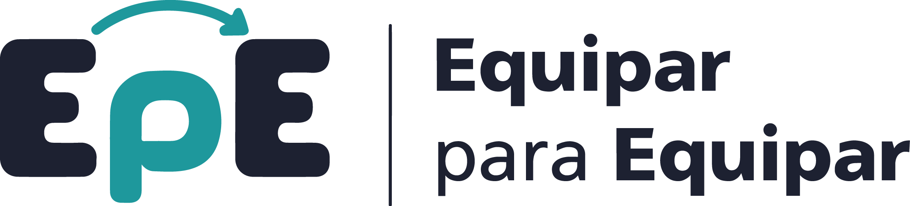

Ejercicio de reacción y lateralidad: una fila de frutas se acerca de a una. Presioná la flecha del lado que le corresponde a la fruta más cercana — con las flechas del teclado (← →) o tocando los botones en pantalla.